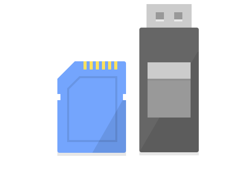
You might just want to have a plan, which will allow you to recover your Chromebook in case disaster strikes, especially if your Chromebook is the only computer that you have access to.
You might need to perform a recovery if:
You will need a microSD card or USB thumb drive with at least an 8 GB capacity.
Any/all data on the drive will be lost during the recovery disk creation process.
From here on, in this guide, we'll refer to both microSD card and USB thumb drive as recovery media.
For computers other than Chromebooks, both methods outlined here will require elevated privileges, in order to write to the recovery media:
Linux and macOS
Windows
Recommended for Chromebooks, macOS, and Windows ...
* macOS / Windows require a Chrome or Edge web browser
Time/space estimates:
Phase | mm:ss |
Downloading | 2:20 |
Verifying | 0:06 |
Unpacking | 0:10 |
Writing to USB | 12:00 |
Verifying USB | 2:30 |
Total time | 17:06 |
Free disk space | 15 GB |
Prepare your recovery media by backing up any files you want to keep, because this process will wipe the entire contents during creation of the recovery disk.
Start by opening your Chrome browser, and going to the Chromebook Recovery Utility extension page in the Chrome Web Store ... alternatively, in the three-dot menu at top-right of Chrome, select Extensions | Visit Chrome Web Store and search for Chromebook Recovery Utility.
Install the extension ... it's icon should match the one shown at left |
When you're ready, start the Chromebook Recovery Utility and click Get started:
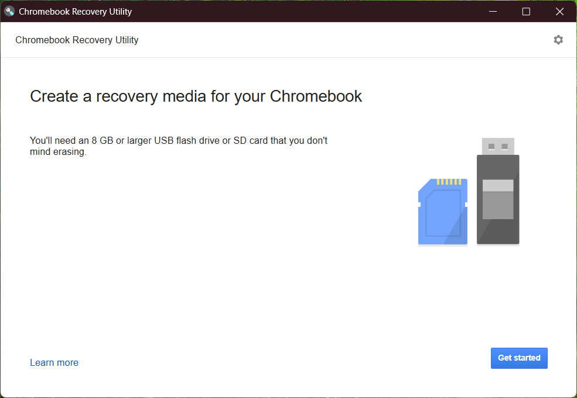
Click the Select a model from a list button:
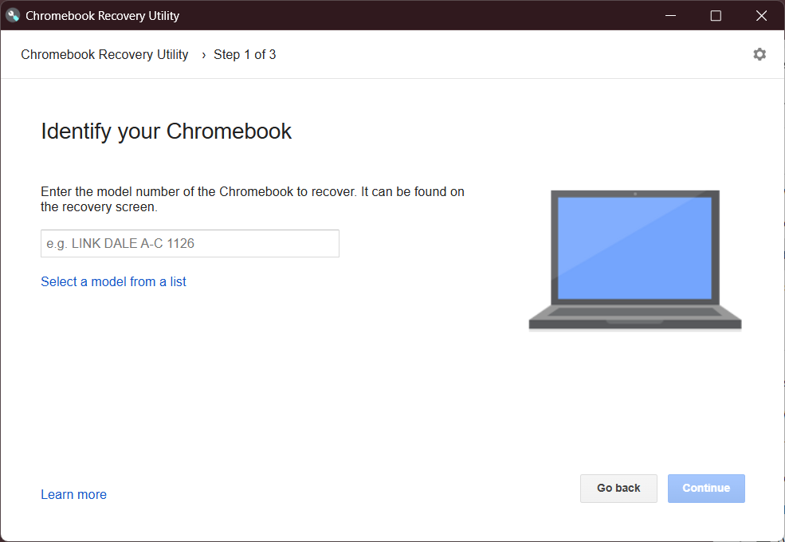
Click the Select a manufacturer drop-down list, then select your manufacturer.
Repeat this for the Select a product menu, selecting your Chromebook model.
For this guide, we're going to use the HP Chromebook 14-db0 as an example:
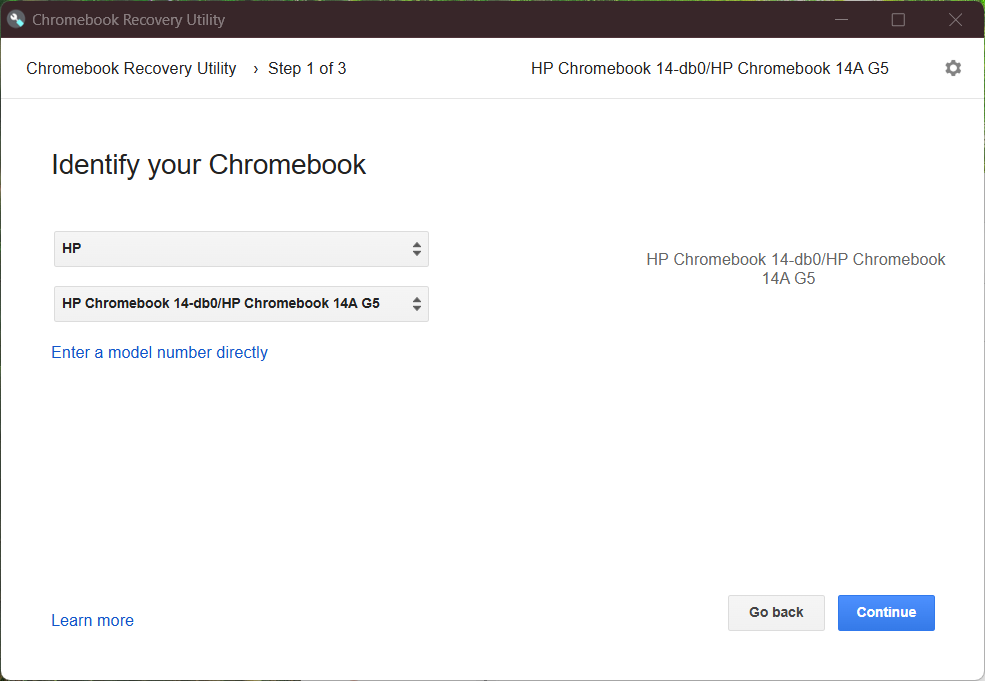
On the next screen, select your recovery media from the menu.
Take care to ensure that it's the correct disk, as it will be wiped:
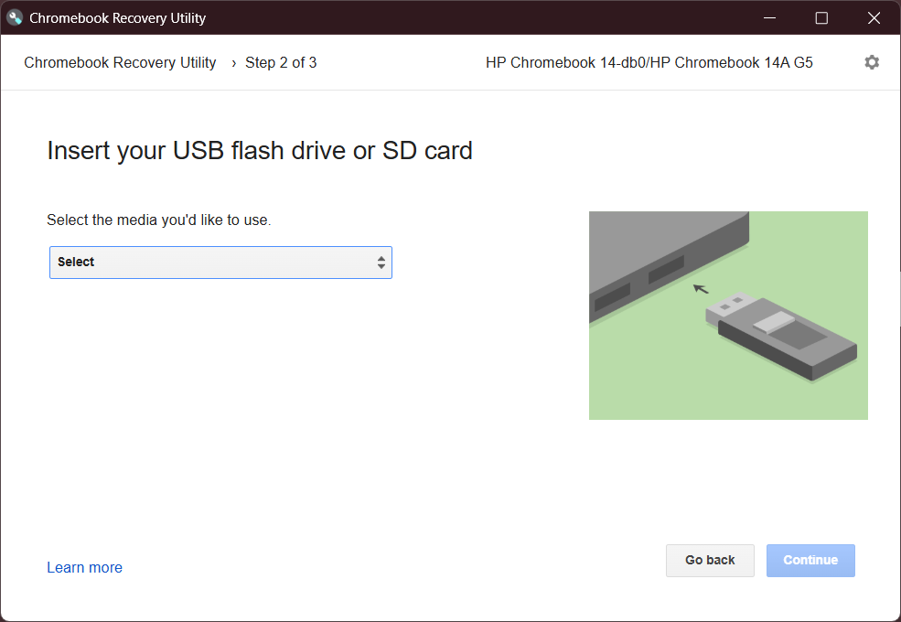
Note that in this example, the recovery media is a microSD card. If you are
using a USB thumb drive, it will show the type of drive & the drive's capacity:
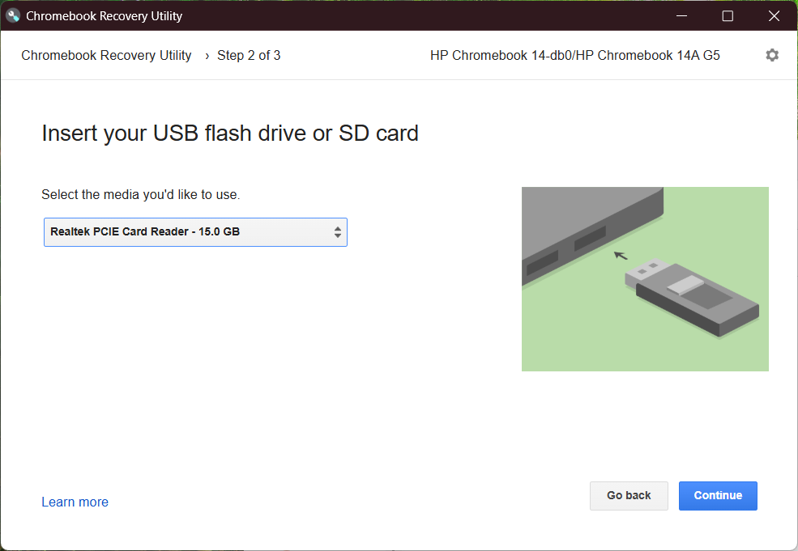
When you are ready, click the Create now button:
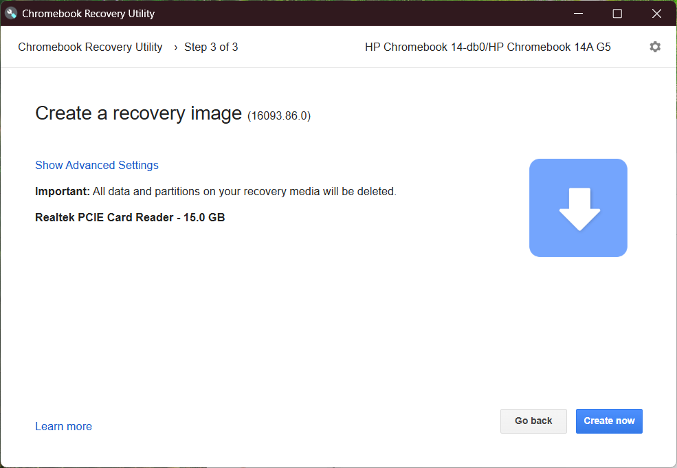
The process will take about 17 minutes, in 5 phases ...
Download, verify, unpack, write USB, & then verify USB.
Phase 1 ... downloading:
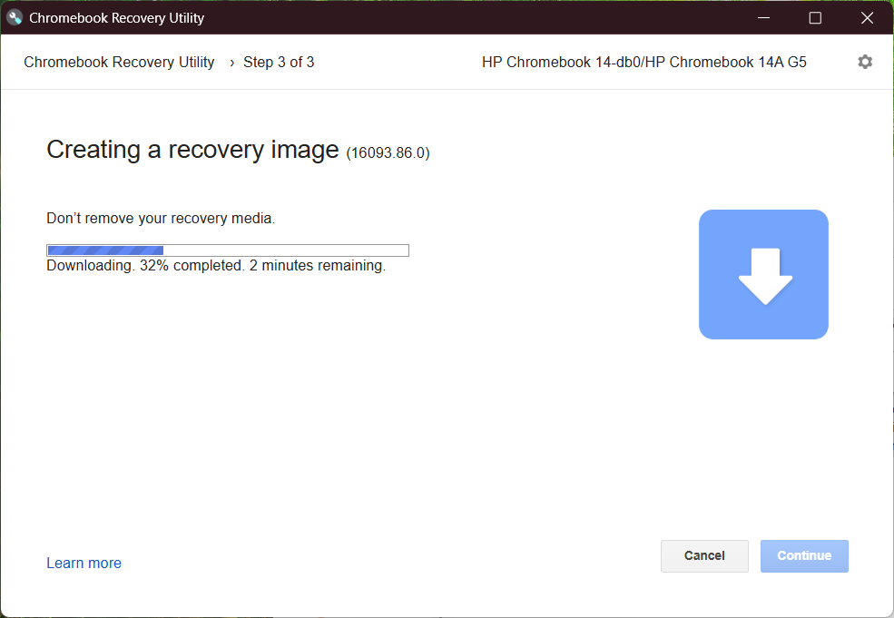
Phase 2 ... verifying download:
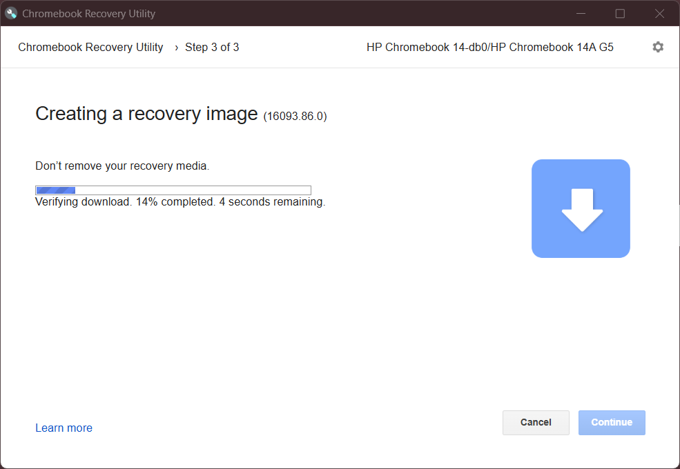
Phase 3 ... unpacking archive:
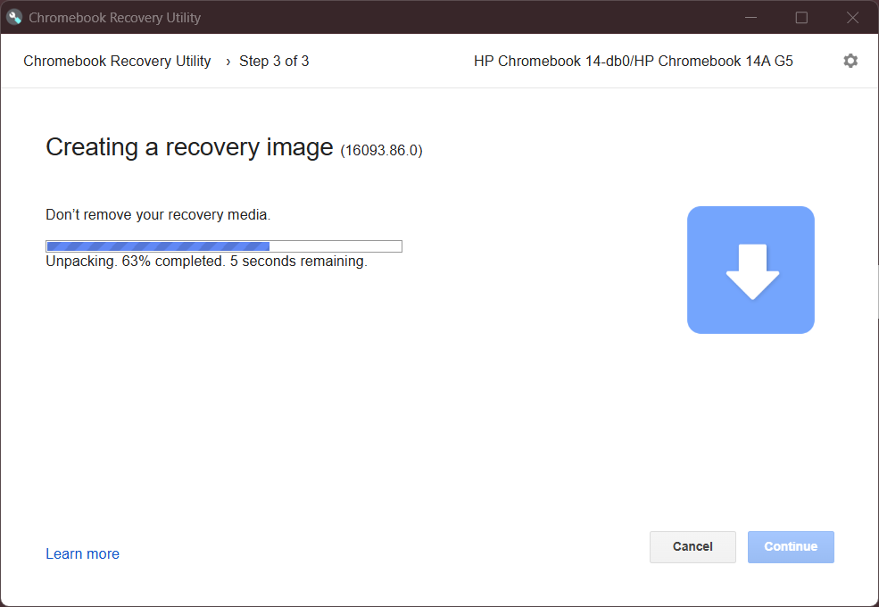
Windows will prompt you with a User Access Control dialog ...
Click the Yes button to allowing writing to your recovery media:
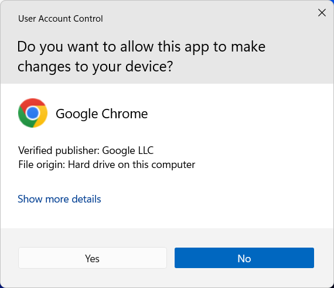
Phase 4 ... writing USB:
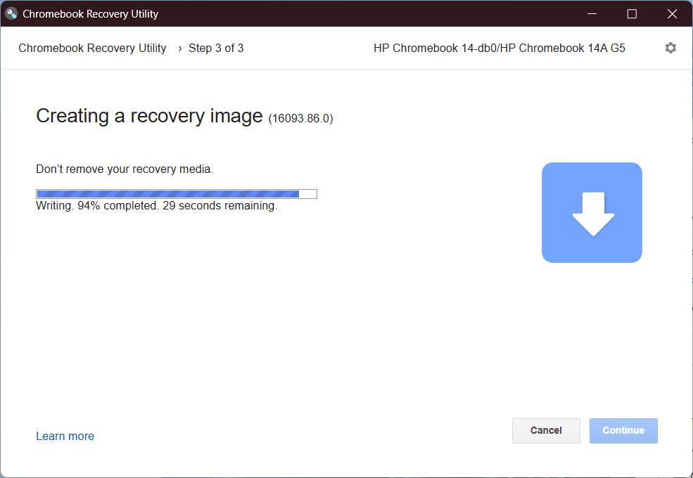
Phase 5 ... verifying USB:
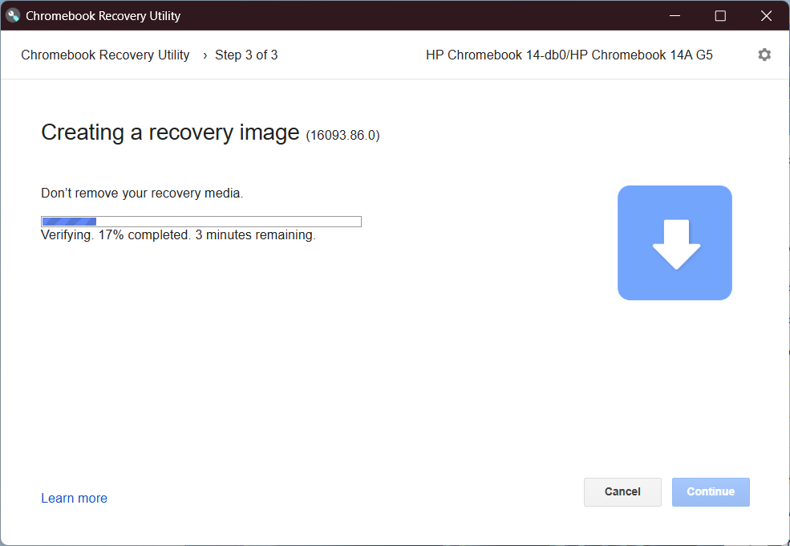
Click the Done button to quit the Chromebook Recovery Utility:
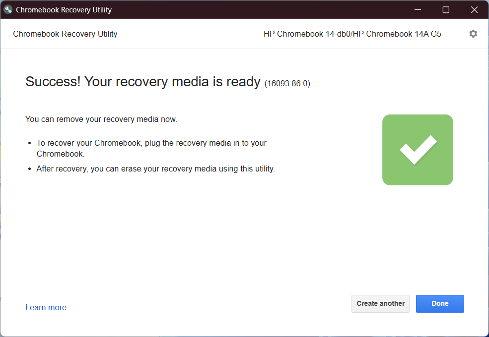
Optional: when the disk has been written, it's time to clean up. You may want to remove the temporary folder created by the Chromebook Recovery Utility ... to do so, please refer to the Troubleshooting section, where this is covered in detail.
That's it ... you are now ready to use your recovery media to repair your Chromebook.
While not tested, this method may work within the Linux Development Environment on ChromeOS, and/or the Windows Subsystem for Linux on Windows, but be aware of your disk space limitations.
Time/space estimates:
Phase | Minutes |
Downloading | 3 |
Writing to USB | 18 |
Verifying USB | 3 |
Total time | 24 |
Free disk space | 6.5 GB |
This method is a hybrid solution ... while not exactly "Google approved", it gets the job done just fine. There are two distinct parts here:
* Image in this context refers to an exact copy of a computer's hard disk, for setting up new disks.
The first thing you will need is your Chromebook's hardware identifier (HWID):
Either way, make a note of your HWID, because you'll need to type it in when you run the Recovery Tool script ... for this example, we're going to use the HP Chromebook 14-db0, code name: careena
The next step is to download the script, referred to by Google as the Recovery Tool:
Save the file somewhere logical, so you can find it again, then go to that folder and grant execute permissions for the script:
chmod u+x linux_recovery.shPart 1a uses the Recovery Tool script to download the disk image specific to your Chromebook:
sudo bash linux_recovery.shNote the three separate inputs to prompts from the script ...
Remember to substitute careena and 237 with your values:
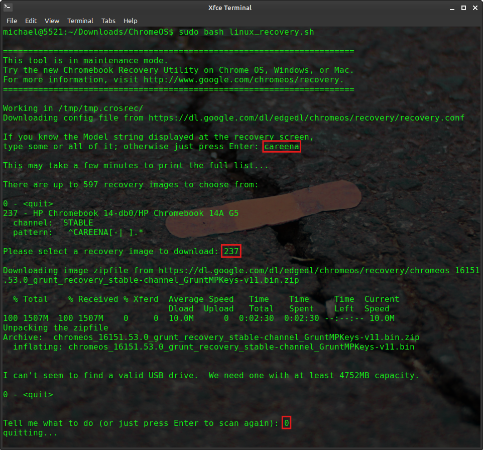
Part 1b uses a slightly different approach to downloading the recovery image file, and subject to your point of view, is either easier or more advanced, depending on your skill level.
Go to this Chromium Dash web page, then next to the Search icon, type in either your Chromebook make/model ... or the actual Hardware ID itself (HWID).
It should list your device, and when you click on it, you will be presented with a page outlining the different versions available.
You will need to maximize your browser window to see the full output, including the download links.
Download the recovery image archive to a folder of your choosing, then unzip the file and proceed to the next step.
Part 2 involves using Balena Etcher to write the recovery image to your recovery media:
Download Balena Etcher:
Go to https://etcher.balena.io/ to download the latest version ... you'll see a Download button at top center. Download the Etcher for Linux x64 (64-bit) (zip) version.
Unzip the file, then open a terminal window (or cd into) the balenaEtcher-linux-x64 folder ...
To run the Balena Etcher executable program, type this command, then press the Enter key:
./balena-etcherFollow these steps to flash the recovery image to your recovery media:
Optional: when the disk has been written, it's time to clean up. You may want to remove the temporary folder created by the script ... to do so, run this command in your terminal (adjust the path if required):
sudo rm -rf /tmp/tmp.crosrecThat's it ... you are now ready to use your recovery media to repair your Chromebook
If the Chromebook Recovery Utility fails with a message similar to the following, you'll need to free up some disk space on the drive where your user files are stored ... usually C:
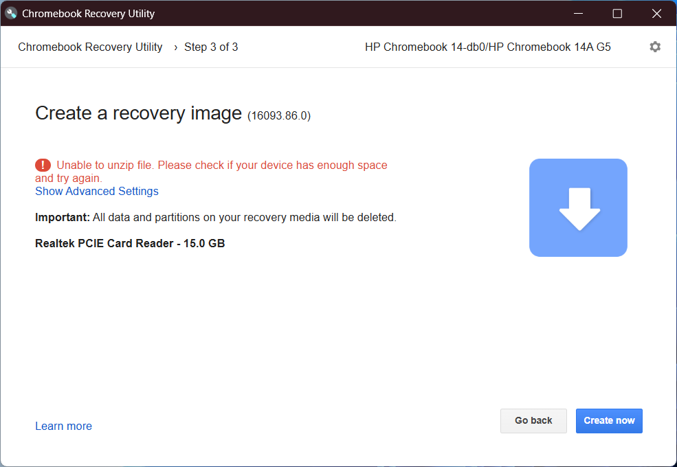
Tidy up: by default, the Chromebook Recovery Utility will download temporary files to a subfolder under %USERPROFILE%\AppData\Local\Temp
Note that %USERPROFILE% is a system variable that represents your user subfolder under the main Users folder ... normally C:\Users
If you go to this folder, delete all subfolders beginning with the name scoped_dir
Hopefully, you will now have at least 15 GB free on your %USERPROFILE% drive.
If not, then you might need to move some files/folders to external storage, even if it's just temporarily.
To free up disk space on your Chromebook or MacBook, restart the O/S ... it should remove any temporary files created in previous sessions.
Similarly, if you receive an error message about low disk space, you will need to either backup/remove some files, or use another drive as temporary storage for the recovery downloads.
The script will actually tell you how much disk space there is now, how much is needed, as well as the actually path being used to store temporary files.
Another thing the script tells you is how to change the path that's used to store temporary files ... type this command into your terminal just before you run the script:
WORKDIR=/path/to/some/dir
where /path/to/some/dir is the actual full path to the temporary location you wish to use instead.